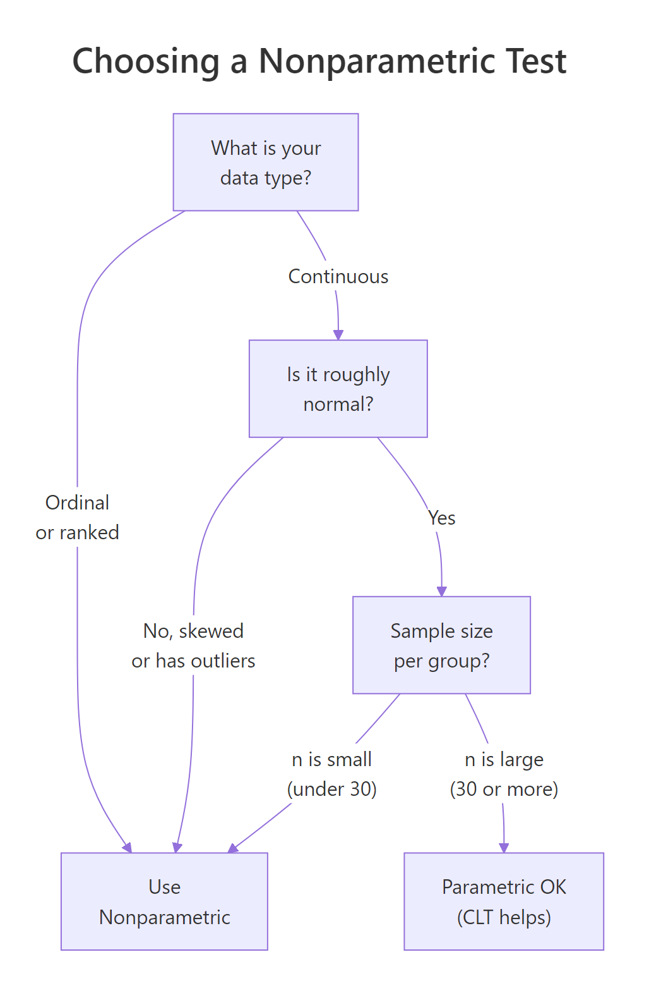
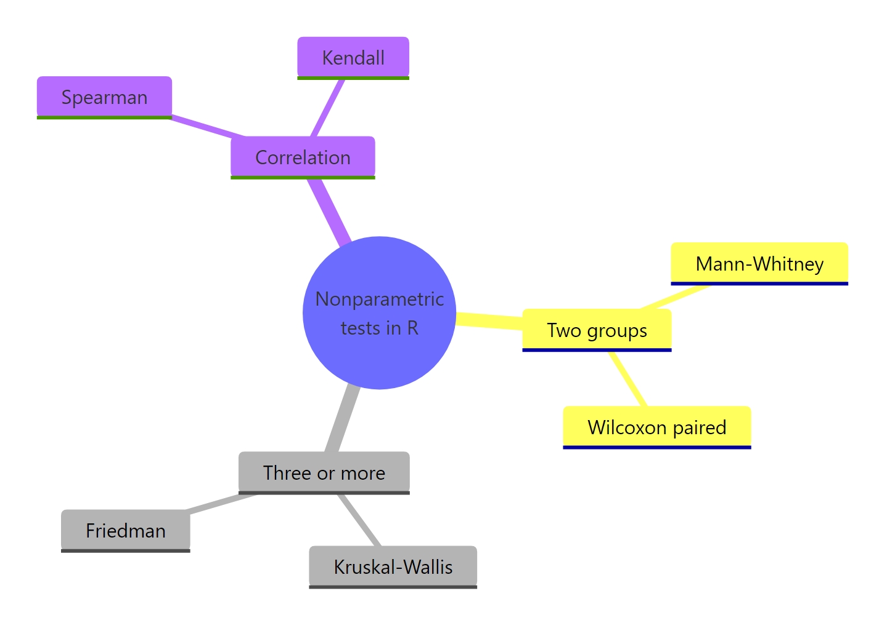

When to Use Nonparametric Tests in R: Decision Guide with Flowchart
Use a nonparametric test in R when your data fail the assumptions of a parametric test, that is, when the distribution is skewed, contains outliers, the sample is small, or the values are ordinal. This guide gives you one decision flowchart, the parametric-to-nonparametric mapping, and runnable code for every test you'll need.
Examples below use base R (wilcox.test, kruskal.test, friedman.test, cor.test), so there's nothing extra to install.
When does a nonparametric test win in R?
The fastest way to feel why this matters is to run both tests on the same messy data and compare. We'll build two groups where group B truly has higher values than group A, then sneak three large outliers into group A. The outliers drag A's mean upward, hiding the true ordering. We then ask the t-test and the Wilcoxon test the same question: are these groups different?
The t-test reports p = 0.29, so it cannot reject the null that the means are equal. The Wilcoxon test reports p = 0.001, a clear rejection. Both tests saw the same numbers; only one detected the truth. The outliers pulled group A's mean above group B's, but they could not change the fact that most A values rank below most B values. The Wilcoxon test works on ranks, not magnitudes, so a few extreme points cannot dominate it.
Try it: Repeat the demo with smaller outliers (replace 60, 65, 70 with 15, 18, 20) and re-run both tests. Save the two p-values to ex_t and ex_w.
Click to reveal solution
Explanation: With smaller outliers, the t-test recovers and even agrees with Wilcoxon, but Wilcoxon still reports a smaller p-value because rank order is unaffected by spread.
What assumptions of parametric tests must hold?
Parametric tests like the t-test and ANOVA earn their power by assuming something about the data. Three assumptions matter most:
- Normality. Each group (or the residuals) follows a roughly bell-shaped distribution.
- Equal variance (homoscedasticity). Spread is similar across groups.
- Independence. Observations don't influence each other.
When any of these fail, the test's reported p-value is no longer trustworthy. Let's check each in R, starting with normality.
The normal sample passes (p = 0.71, well above 0.05), so the assumption holds. The exponential sample fails dramatically (p = 0.0001), confirming what we already knew: it's right-skewed. A small p-value here is a red flag, not a green one. It tells you the data are unlikely to have come from a normal distribution.
Next, equal variance:
var.test() runs an F-test on the ratio of variances. The tiny p-value here flags unequal spread. For more than two groups, swap in bartlett.test() (sensitive to non-normality) or the leveneTest() from the car package. If equal variance fails, even a Welch t-test (which relaxes this) may leave you happier with a rank-based alternative when normality also fails.
Finally, the practical "outlier detector" most analysts actually use, the IQR rule:
Three points fall more than 1.5 IQRs outside the box, the standard "boxplot whisker" rule. Three out of 53 is roughly 6%, well into the range where parametric tests start to lose power. If your real-world dataset shows even 5-10% outliers, your t-test is paying a tax that a Wilcoxon test does not.
Try it: Run shapiro.test() on airquality$Wind and decide whether it passes the normality assumption.
Click to reveal solution
Explanation: p = 0.12 > 0.05, so we fail to reject normality. Wind speed is borderline normal, and a parametric test is reasonable here.
What is the decision flowchart for choosing a nonparametric test?
The flowchart below collapses everything above into one picture. Read it top to bottom: classify your data, check distribution shape, then check sample size. If any branch lands on "Use Nonparametric," skip the t-test or ANOVA.

Figure 1: The decision flowchart for choosing between parametric and nonparametric tests.
The four exit points work like this:
- Ordinal data (Likert scales, rankings, ordered categories) goes straight to nonparametric. There's no meaningful "mean" of "Strongly Agree."
- Continuous but skewed or outlier-laden data goes to nonparametric. Magnitudes are unreliable.
- Continuous, roughly normal, but small n goes to nonparametric. Without the Central Limit Theorem rescuing you (it kicks in around n = 30), the t-test's p-value depends on perfect normality, which you can't verify with so few points.
- Continuous, roughly normal, large n goes to parametric. You earn the extra power.
Let's apply it to a concrete dataset, the daily ozone readings in airquality:
Mean (42) much greater than median (31.5) screams right-skew. Maximum of 168 against a third quartile of 63 confirms outliers. The Shapiro-Wilk p-value is microscopic. Three branches of the flowchart all point to "nonparametric." Comparing ozone across months should use kruskal.test(), not one-way ANOVA.
Try it: Walk iris$Sepal.Width through the flowchart and decide which test family you'd use to compare it across species. Save your answer as a string.
Click to reveal solution
Explanation: Sepal.Width passes the normality test and has n = 150, so the flowchart sends you to the parametric branch (one-way ANOVA across species).
What are the main nonparametric tests in R, and when do you use each?
Once the flowchart points you nonparametric, the next question is which nonparametric test. Each parametric test has a rank-based counterpart that asks the same scientific question without needing normality.
| Parametric test | Nonparametric counterpart | R function | Use when |
|---|---|---|---|
| Independent t-test | Mann-Whitney / Wilcoxon rank-sum | wilcox.test(x, y) |
Two unpaired groups |
| Paired t-test | Wilcoxon signed-rank | wilcox.test(x, y, paired = TRUE) |
Two paired measurements |
| One-way ANOVA | Kruskal-Wallis | kruskal.test(y ~ group) |
3+ unpaired groups |
| Repeated-measures ANOVA | Friedman | friedman.test(y, groups, blocks) |
3+ paired or blocked measurements |
| Pearson correlation | Spearman / Kendall | cor.test(x, y, method = "spearman") |
Monotonic but not linear association |
Now let's run each one on a built-in dataset.
Mann-Whitney (two independent groups)
The two drug groups in sleep show a borderline difference (p = 0.069). At the conventional 0.05 cutoff we wouldn't reject the null, but the small sample (n = 10 per group) leaves us under-powered. The W statistic is the sum of ranks in one group; the p-value compares it to the distribution of W under random shuffling.
wilcox.test() is two tests in one. Without paired = TRUE it's the Mann-Whitney / Wilcoxon rank-sum (independent groups). With paired = TRUE it's the Wilcoxon signed-rank (paired measurements). The function name in R is historical, the same wilcox.test() covers both.Wilcoxon signed-rank (paired measurements)
When we treat the two columns as paired (each subject got both drugs), p drops to 0.009. Pairing removes between-subject variation, which is why the same data now gives a much sharper signal. The V statistic of 0 means every difference favored drug 2.
Kruskal-Wallis (3+ independent groups)
chickwts has 71 chicks across 6 feed types, with a few obvious outliers in the heaviest groups. The Kruskal-Wallis test compares average ranks across feeds and gives p < 1e-6. Some feed type produces a very different weight distribution. To find which pairs differ, follow up with pairwise.wilcox.test(chickwts$weight, chickwts$feed, p.adjust.method = "bonferroni").
Friedman (3+ paired or blocked measurements)
Each row is a baseball player; each column is a base-rounding technique they all tried. The Friedman test checks whether technique matters within players, ranking the three columns row by row. With p = 0.0038 we reject the null of no difference between techniques.
Spearman correlation (monotonic association)
Spearman's rho of -0.89 says that as horsepower goes up, miles-per-gallon goes down, monotonically and strongly. Spearman is happy with monotonic but non-linear relationships, where Pearson would understate the association.
Try it: Run a Kruskal-Wallis test on count ~ spray from InsectSprays. Save the result to ex_kw and report the p-value rounded to 4 decimals.
Click to reveal solution
Explanation: With p ≈ 1.5e-10 we strongly reject the null that all six sprays produce the same insect counts. At least one spray differs from the others.
What are common mistakes when picking nonparametric tests?
Four myths catch new analysts. Each one is wrong, and knowing why sharpens your decision making.
Myth 1: "Small n always means nonparametric." Not if your data are clearly normal and you have prior knowledge of the distribution. With n = 10 truly normal points, a t-test still has more power than a Wilcoxon test.
Myth 2: "Mann-Whitney tests medians." It does only when both groups share the same shape and spread. In general it tests stochastic dominance, the question "are values from one group typically larger?" A significant Mann-Whitney does not by itself mean medians differ.
Myth 3: "Nonparametric means assumption-free." Wrong. Independence still matters. Friedman assumes the same scale across blocks. Wilcoxon paired assumes symmetric differences. The label "nonparametric" only relaxes the distribution assumption, not all of them.
Myth 4: "Always run nonparametric to be safe." Costly. On truly normal data, Wilcoxon has about 95% the power of a t-test (the asymptotic relative efficiency). On heavy-tailed data, Wilcoxon is hugely more powerful. Pick based on assumption checks, not blanket caution.
It's also worth knowing how to report a standardized effect alongside a Wilcoxon p-value. The conventional rank-biserial correlation, derived from the Z statistic, is one option:
A rank-biserial correlation of 0.41 is in the "medium-large" range by Cohen's rule of thumb (0.1 / 0.3 / 0.5 for small / medium / large). Report this next to the p-value so reviewers see effect magnitude, not just significance.
Try it: Which myth is reflected in this one-line analysis? "My sample is small (n=12), so I'll use a Wilcoxon test."
Click to reveal solution
Explanation: Small samples don't automatically rule out parametric tests. If the data are plausibly normal (small samples often look noisy but symmetric), a t-test gives sharper conclusions.
Practice Exercises
Exercise 1: Pick the right test for iris$Sepal.Length
Compare Sepal.Length across the three iris species. Run the appropriate normality and variance checks, decide between one-way ANOVA and Kruskal-Wallis, then run the chosen test. Save the result to my_iris_test.
Click to reveal solution
Explanation: All three species pass Shapiro-Wilk individually, but Bartlett rejects equal variance. With one assumption violated and a clean rank-based alternative available, Kruskal-Wallis is the conservative choice. The huge chi-squared and tiny p-value confirm species differ in sepal length.
Exercise 2: Paired comparison with effect size
Compare drug 1 and drug 2 in the sleep dataset as paired measurements. Decide between a paired t-test and Wilcoxon signed-rank by inspecting the distribution of differences, run the chosen test, then compute the rank-biserial effect size. Save it to my_sleep_es.
Click to reveal solution
Explanation: The differences fail Shapiro-Wilk (p = 0.03), so we go nonparametric. The Wilcoxon signed-rank gives p = 0.009, and the rank-biserial of 0.83 is a large effect. Reporting both p-value and effect size paints the full picture.
Complete Example
Let's run the full pipeline on airquality$Ozone ~ Month. Does ozone differ across the five summer months in the dataset? We'll move from raw data to a defensible test choice to a reported result.
The summary shows means well above medians for July and August, classic right-skew. Residuals fail Shapiro by a wide margin. Bartlett rejects equal variance. Two assumptions of one-way ANOVA are violated, so Kruskal-Wallis is the right call. The test rejects strongly (p ≈ 7e-6): ozone levels differ by month. The pairwise follow-up tells you exactly which months differ, with Bonferroni controlling the family-wise error rate.
Summary

Figure 2: The main families of nonparametric tests in R.
Key takeaways:
| Question | Answer |
|---|---|
| When does nonparametric win? | Skewed data, outliers, ordinal scales, or small samples |
| When does parametric win? | Roughly normal data, n ≥ 30 per group, equal variance |
| Two independent groups | wilcox.test(x, y) |
| Two paired measurements | wilcox.test(x, y, paired = TRUE) |
| Three or more independent groups | kruskal.test(y ~ group) |
| Three or more paired or blocked groups | friedman.test(y, groups, blocks) |
| Rank correlation | cor.test(x, y, method = "spearman") |
| Effect size after Wilcoxon | r = abs(qnorm(p/2)) / sqrt(n) |
Apply the flowchart before you run the test you care about, report an effect size next to every p-value, and remember that "nonparametric" relaxes the distribution assumption, not the independence one.
References
- R Core Team. *R documentation:
wilcox.test,kruskal.test,friedman.test,cor.test*. Link - Hollander, M., Wolfe, D. A., & Chicken, E. Nonparametric Statistical Methods, 3rd ed. Wiley (2014). Link
- Conover, W. J. Practical Nonparametric Statistics, 3rd ed. Wiley (1999). Link
- Mangiafico, S. R Companion: Introduction to Traditional Nonparametric Tests. Link
- Helwig, N. E. Nonparametric Hypothesis Tests in R, University of Minnesota. Link
- Kruskal, W. H., & Wallis, W. A. (1952). Use of ranks in one-criterion variance analysis. Journal of the American Statistical Association, 47(260), 583-621. Link
- Wilcoxon, F. (1945). Individual comparisons by ranking methods. Biometrics Bulletin, 1(6), 80-83. Link
Continue Learning
- Hypothesis Testing in R, the foundations of hypothesis testing, p-values, and decision rules.
- Wilcoxon, Mann-Whitney and Kruskal-Wallis in R, a deep dive on the three big rank-based tests with worked examples.
- Normality and Variance Tests in R, the pre-flight checks including Shapiro-Wilk, Anderson-Darling, and Levene's test.
Further Reading
- Runs Test in R: Test Whether a Sequence Is Random
- Kolmogorov-Smirnov Two-Sample Test in R: Compare Two Distributions
- Anderson-Darling Test in R: Sensitive Normality Test Alternative
- Fligner-Killeen Test in R: Robust Alternative to Levene's Test
- Nonparametric Density Estimation in R: KDE, Bandwidth Selection